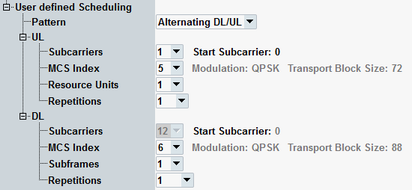

The parameters in this section apply if "Scheduling Type" = "User defined".
The UL settings are used for NPUSCH format 1. The settings for NPUSCH format 2 are fixed.
There are dependencies between the settings. Configure the UL or DL settings from the top left to the bottom.
For valid parameter combinations, see "User-Defined Scheduling".

The signaling application sends a UL grant or a DL grant to the UE at each possible search space occasion.
The pattern defines the sequence of the grants.
"Alternating DL/UL" | Alternating DL grants and UL grants are sent. |
"Continuous UL" | Only UL grants are sent. Can be used for multi-evaluation measurements. |
"Continuous DL" | Only DL grants are sent. Can be used for BLER tests. |
"No scheduling" | No UL or DL grants are sent. The other settings in this section are ignored. Can be used to check whether the UE transmits without permission. |
Number of scheduled subcarriers and offset of the first scheduled subcarrier from the edge of the transmission bandwidth.
Remote command:MCS index value. It determines the modulation scheme and the transport block size, which are displayed for information.
Remote command:Number of resource units for the UL and number of subframes for the DL.
Remote command:Selects the number of repetitions of each transmission.
Remote command: